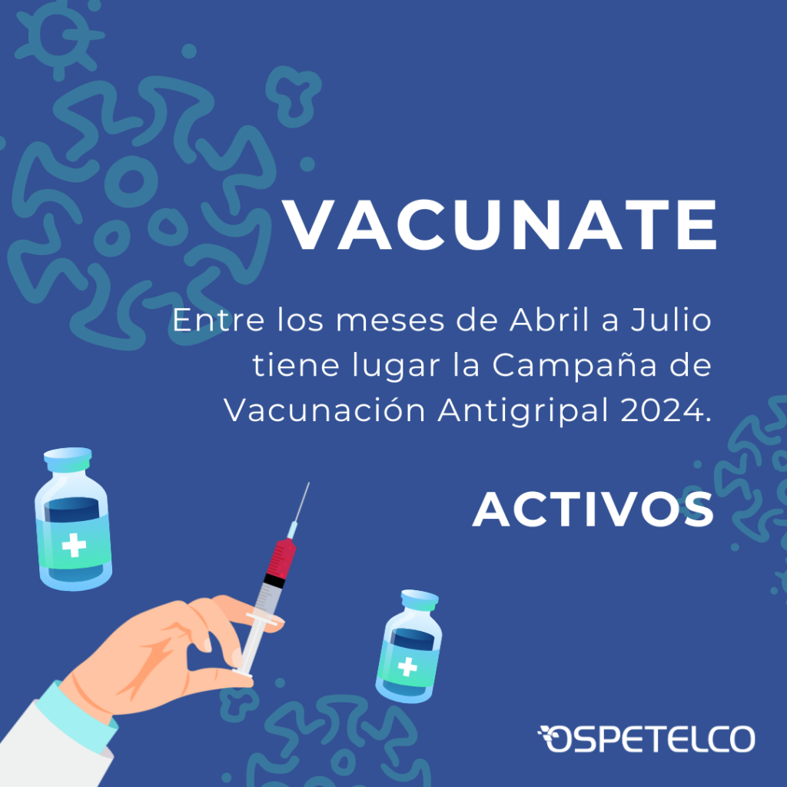
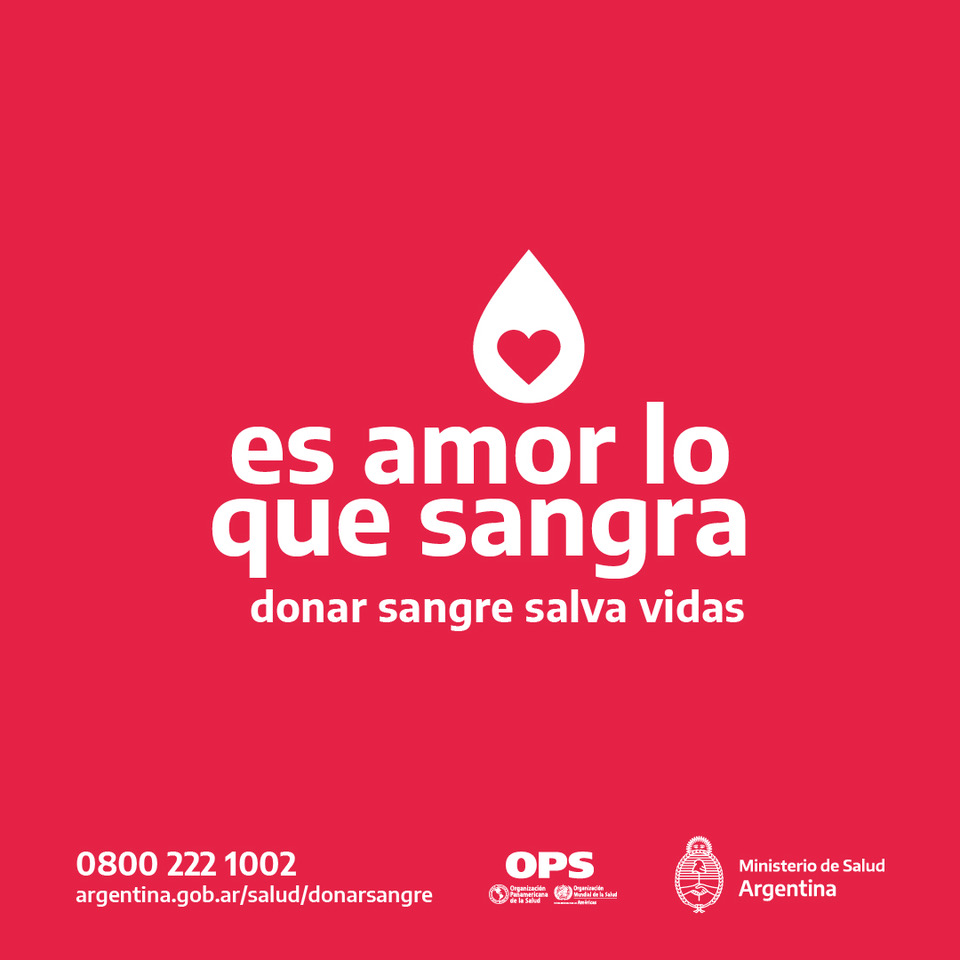

Acerca de nosotros
En Centro de Ozonoterapia, Acupuntura y Clinica Medica, nos enorgullecemos de ofrecer una atención médica de calidad, personalizada y holística para todos nuestros pacientes. Nuestro enfoque multidisciplinario combina lo mejor de la medicina general con técnicas avanzadas y terapias alternativas, brindando un cuidado integral que aborda tanto el bienestar físico como el emocional. Nos encontramos ubicados en la ex clínica de especialidades, desde hace 5 años. Gracias a la confianza que nos brindan nuestros en elegirnos día a día, estamos orgullosos y contentos de comunicarles que se abrira, ademas del centro existente, uno más en la zona sur de la ciudad. Gracias por elegirnos.
CAMPAÑAS 2024
 